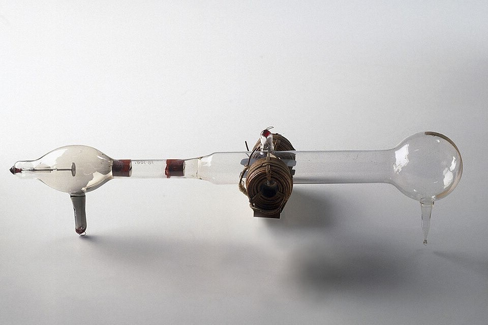
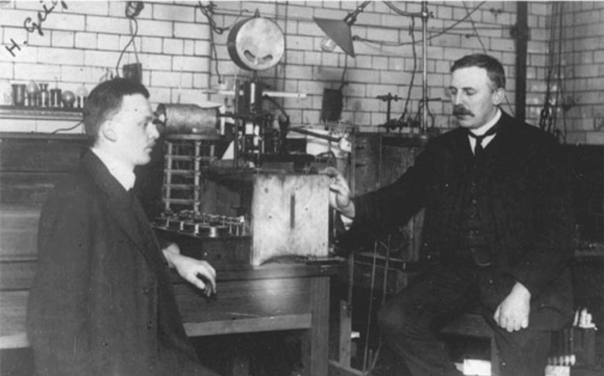
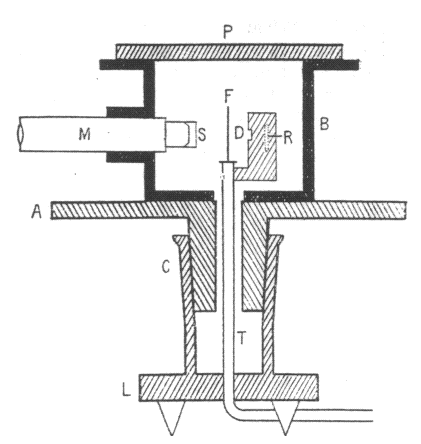
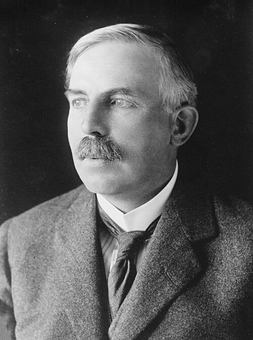
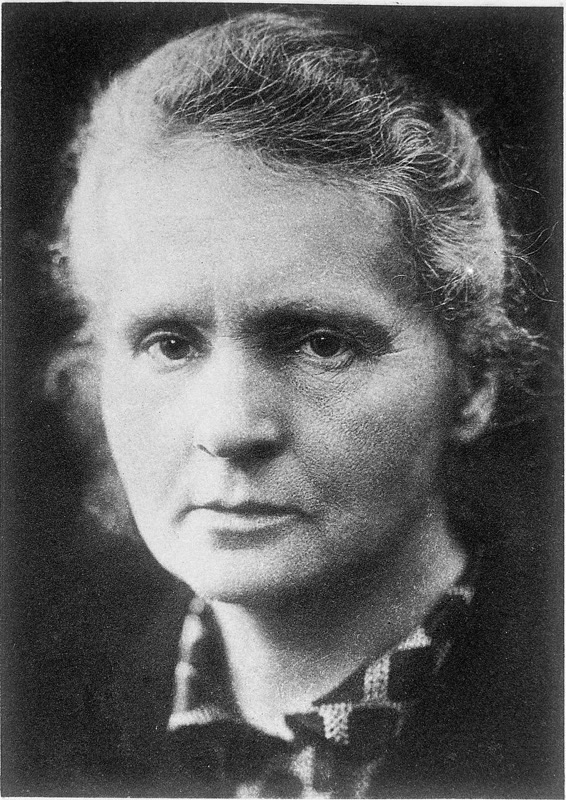
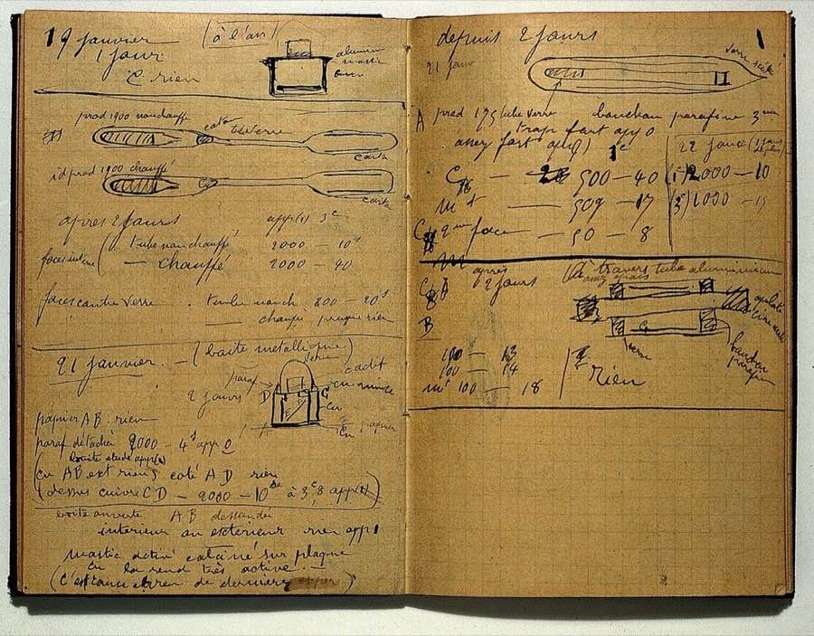
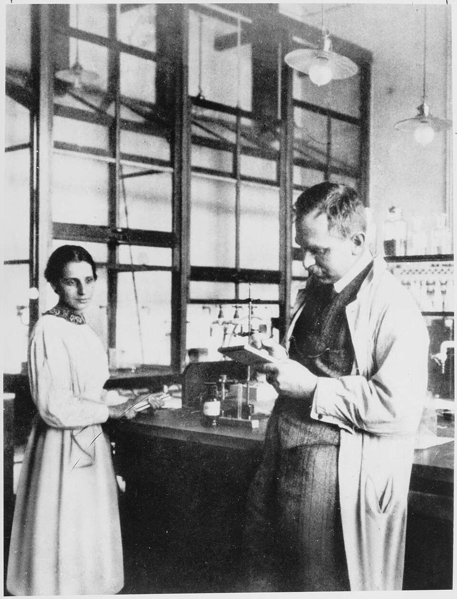

AQA GCSE Physics: 4.4 Atomic structure
Tiny atom.
Big ideas!
Inside the atom, changing models
Nuclear radiation, half-life
Fission and fusion Triple only
The journey
Four big questions.
Part 01
What is inside an atom?
Particles, size, isotopes, ions
Part 02
How do we know?
Plum pudding → nuclear → Bohr
Part 03
What do unstable nuclei do?
Alpha, beta, gamma, half-life
Part 04 Triple only
How do we use the nucleus?
Hazards, medicine, fission, fusion
Part 01
Inside the atom.
Protons, neutrons, electrons
Inside the atom
Three particles.
| Particle | Relative charge | Relative mass | Where? |
|---|
| Proton | +1 | 1 | Nucleus |
| Neutron | 0 | 1 | Nucleus |
| Electron | −1 | Very small | Energy levels around the nucleus |
Atom = neutral. Number of electrons = number of protons.
Inside the atom
Mostly empty space.
- Atom radius \(\approx\) \(1 \times 10^{-10}\) m
- Nucleus radius \(< \dfrac{1}{10\,000}\) of the atom’s
- Almost all the mass is in the nucleus
- Electrons at different distances: energy levels
Inside the atom
Reading the symbol.
- Atomic number = number of protons
- Mass number = protons + neutrons
- Neutrons = mass no. − atomic no.
- Protons decide the element
Try: \({}^{23}_{11}\mathrm{Na}\) → 11 p, 12 n, 11 e
Inside the atom
Isotopes.
- Same element: same protons
- Different numbers of neutrons
- So different mass numbers
- Some are unstable: carbon-14
ISOTOPES OF CARBONNOT TO SCALE
Inside the atom
Atoms and ions.
- Atom: electrons = protons
- So no overall charge
- Lose outer electron(s) → positive ion
- The nucleus does not change
Part 02
How the model changed.
New evidence → new model
Changing models
A model that kept changing.
Before 1897Solid spheres
Tiny spheres that cannot be divided
1904Plum pudding
After the electron was discovered
1911Nuclear model
From alpha scattering
1913Bohr model
Electrons in energy levels
The story · Cambridge, 1897
Background story · the exam tests the models, not these details
Thomson finds the electron.
 J. J. Thomson
J. J. Thomson

The cathode ray tube he used in 1897, now in the Science Museum, London (photo mirrored)
- Glowing rays crossed the tube. Nobody knew what they were
- Magnets and electric fields bent the rays: they were negative particles
- Every metal he tried gave the same particles
- So they must be inside every atom: the electron
Atoms can be divided. The solid sphere model had to go.
Portrait: Bain News Service, Library of Congress, public domain. Tube: Science Museum London, CC BY-SA 2.0.
Thomson (1904)
The plum pudding model.
- Electron discovered → atoms can be divided
- A ball of positive charge
- Negative electrons embedded in it
- No nucleus
Try it: Atomic Models sim ↗
PLUM PUDDING MODELNOT TO SCALE
− Electron+ Positive charge (spread)
The story · Manchester, 1909
Background story · the exam tests the models, not these details
A professor, his assistant and a student.

Hans Geiger (left) and Ernest Rutherford in the laboratory
 Ernest Marsden, pictured in 1921
Ernest Marsden, pictured in 1921

Their apparatus, from the 1913 paper: source R, foil F, screen S, microscope M
- Each alpha particle made a tiny flash on a screen. Geiger counted flashes through a microscope, for hours in a darkened lab
- Rutherford asked Marsden, a 20-year-old student, to look for alpha particles bouncing back. Nobody expected any
- In an early test with a platinum plate, about 1 in 8000 bounced back. The plum pudding model could not explain it
Photos: unknown photographer and S P Andrew Ltd, public domain. Diagram: Geiger and Marsden, 1913, public domain.
Rutherford, Geiger & Marsden (1909–1911)
The alpha scattering experiment.
- Fire alpha particles (+) at thin gold foil
- Count them at all angles
- Plum pudding predicts: all pass through
- Only tiny deflections expected
ALPHA SCATTERINGNOT TO SCALE
Evidence → conclusion
What they saw. What it means.
OBSERVATIONCONCLUSION
Most went straight through
→Atom is mostly empty space
Some were deflected
→Centre is positively charged
A very few bounced back
→Mass concentrated in a tiny centre
Rutherford (1911)
The nuclear model.
- A tiny, dense nucleus at the centre
- The nucleus is positive
- Almost all the mass is in it
- Electrons outside the nucleus
- Replaced the plum pudding model
NUCLEAR MODELNOT TO SCALE
− Electron+ Nucleus (positive)
Compare
Plum pudding vs nuclear.
| Plum pudding | Nuclear model |
|---|
| Positive charge | Spread through the atom | In a tiny nucleus |
| Mass | Spread through the atom | Concentrated in the nucleus |
| Empty space? | No | Mostly empty space |
| Electrons | Embedded in the positive ball | Outside the nucleus |
The story · Copenhagen, 1913
Background story · the exam tests the models, not these details
Bohr fixes the nuclear model.
 Niels Bohr, pictured about 1922, the year he won the Nobel Prize
Niels Bohr, pictured about 1922, the year he won the Nobel Prize
- 1912: Bohr, a 26-year-old from Denmark, works in Rutherford’s laboratory
- He sees a problem. An orbiting electron should lose energy and spiral into the nucleus. Atoms would collapse
- 1913: his answer. Electrons can only orbit at certain distances
- The test: his calculations matched the colours of light given out by hydrogen
He kept Rutherford’s nucleus and changed only what the evidence demanded.
Photo: AB Lagrelius & Westphal, public domain.
Bohr (1913)
The Bohr model.
- Bohr adapted the nuclear model
- Electrons orbit at specific distances
- These are energy levels
- His calculations agreed with experiments
Carbon: 2 electrons in \(n = 1\), 4 in \(n = 2\)
BOHR MODEL: CARBON-12NOT TO SCALE
− Electron+ Proton0 Neutron
Bohr (1913)
What Bohr didn’t know.
- Bohr’s nucleus: a tiny positive centre
- Protons: identified later (1919)
- Neutrons: discovered in 1932
- Evidence from James Chadwick
Our Bohr diagrams add protons and neutrons: a modern version.
CARBON: THEN AND NOWNOT TO SCALE
+ Positive nucleus+ Proton0 Neutron− Electron
Energy levels
Electrons can change level.
- Absorb EM radiation → move further out
- Emit EM radiation → move closer in
HYDROGEN ATOMNOT TO SCALE
− Electron+ Proton~ EM radiation
The story · Cambridge, 1932
Background story · the exam tests the models, not these details
Chadwick finds the neutron.
James Chadwick, pictured about 1945

Ernest Rutherford, his teacher and then his boss
- Chadwick was Rutherford’s student in Manchester, then his deputy in Cambridge
- The masses did not add up: a helium nucleus has the charge of 2 protons but the mass of 4
- They suspected a particle with mass and no charge, and hunted it for years
- 1932: Chadwick found the evidence. 1935: Nobel Prize
Photos: Los Alamos National Laboratory (reuse terms); Bain Collection, Library of Congress, public domain.
Filling in the nucleus
Protons, then neutrons.
- Later experiments: positive charge is in small particles: protons
- Each proton: the same positive charge
- James Chadwick (1932): evidence for neutrons
- About 20 years after the nucleus was accepted
CARBON-12 NUCLEUSNOT TO SCALE
+ Proton0 Neutron
Working scientifically
Why models change.
- A model must explain the evidence
- It makes predictions we can test
- New evidence can change or replace it
- Results are published and peer reviewed
Quick check
Atoms and models.
01What is in the nucleus?
Protons and neutrons
02How many neutrons in \({}^{37}_{17}\mathrm{Cl}\)?
\(37 - 17 = 20\)
03Why did most alpha particles pass straight through?
The atom is mostly empty space
04Why did a very few bounce back?
Tiny, dense, positive nucleus
05An electron absorbs EM radiation. What happens?
Moves to a higher energy level (further out)
06Who gave evidence for the neutron?
James Chadwick
Part 03
Nuclear radiation.
Alpha, beta, gamma, half-life
Unstable nuclei
Radioactive decay.
- Unstable nuclei give out radiation
- They become more stable
- Decay is random
- Activity: decays per second, in becquerel (Bq)
- Count rate: decays a detector records per second
DECAY AND DETECTIONNOT TO SCALE
α Alphaβ Betaγ Gamman Neutron
\(\alpha\): Americium-241
Alpha decay.
- 2 protons + 2 neutrons
- Same as a helium nucleus
- Mass number − 4
- Atomic number − 2 → new element
\({}^{241}_{\phantom{0}95}\mathrm{Am}\)→\({}^{237}_{\phantom{0}93}\mathrm{Np}\)+\({}^{4}_{2}\mathrm{He}\)
TOP: \(241 = 237 + 4\) ✓, BOTTOM: \(95 = 93 + 2\) ✓
ALPHA DECAYSIMPLIFIED, NOT TO SCALE
+ Proton0 Neutronα Alpha particle
\(\beta^-\): Carbon-14
Beta decay.
- A neutron → proton + electron
- The fast electron leaves the nucleus
- Mass number unchanged
- Atomic number + 1 → new element
\({}^{14}_{\phantom{0}6}\mathrm{C}\)→\({}^{14}_{\phantom{0}7}\mathrm{N}\)+\({}^{\phantom{0}0}_{-1}\mathrm{e}\)
TOP: \(14 = 14 + 0\) ✓, BOTTOM: \(6 = 7 + (-1)\) ✓
BETA DECAYNOT TO SCALE
+ Proton0 Neutronβ Beta particle (electron)
\(\gamma\): Technetium-99m
Gamma emission.
- EM radiation from the nucleus
- The nucleus loses energy only
- Mass number unchanged
- Atomic number unchanged
\({}^{99\mathrm{m}}_{\phantom{0}43}\mathrm{Tc}\)→\({}^{99}_{43}\mathrm{Tc}\)+\(\gamma\)
SAME PROTONS, SAME NEUTRONS, LESS ENERGY ✓
GAMMA EMISSIONSIMPLIFIED, NOT TO SCALE
+ Proton0 Neutronγ Gamma ray
Nuclear equations
What changes?
| Emitted | Symbol | Mass number | Atomic number |
|---|
| Alpha | \({}^{4}_{2}\mathrm{He}\) | \(-4\) | \(-2\) |
| Beta | \({}^{\phantom{0}0}_{-1}\mathrm{e}\) | No change | \(+1\) |
| Gamma | \(\gamma\) | No change | No change |
| Neutron | \({}^{1}_{0}\mathrm{n}\) | \(-1\) | No change |
Complete: \({}^{226}_{\phantom{0}88}\mathrm{Ra}\) → \({}^{222}_{\phantom{0}86}\mathrm{Rn}\) + ?
Top\(226 - 222 =\) 4Bottom\(88 - 86 =\) 2 → \({}^{4}_{2}\mathrm{He}\) alpha
Compare
Alpha, beta, gamma.
| \(\alpha\) Alpha | \(\beta\) Beta | \(\gamma\) Gamma |
|---|
| What is it? | Helium nucleus | Fast electron | EM wave |
| Charge | +2 | −1 | 0 |
| Ionising | Strongly | Moderately | Weakly |
| Range in air | A few cm | About 1 m | Very far |
| Stopped by | Paper or skin | A few mm of aluminium | Thick lead or concrete (reduced) |
Penetration
What stops each one?
PENETRATION TESTNOT TO SCALE
Uses
Choosing the right source.
Alpha
Smoke alarm
Ionises air; smoke blocks it; long half-life
Beta
Thickness gauge
Partly absorbed by paper; count rate shows thickness
Gamma
Medical tracer Triple only
Passes out of the body, weakly ionising, short half-life
Choose by: penetration, ionising power, half-life
Half-life
Half-life.
- Time for the number of unstable nuclei to halve
- Or: time for the count rate (activity) to halve
- Same time for every halving
Iodine-131: half-life \(\approx\) 8 days
Half-life
Using half-life.
From a graph
Find the half-life
- Read the start value
- Halve it
- Read across, then down
- 400 → 200 at 8 days
Count the halvings
\(T_{\frac{1}{2}} = 8\) days
After 24 days?
- \(24 \div 8 =\) 3 half-lives
- 400 → 200 → 100 → 50
As a ratio
Net decline
- Left after \(n\) half-lives: \(\left(\dfrac{1}{2}\right)^{n}\)
- 3 half-lives: \(\dfrac{1}{8}\) left
- Net decline: ⅞
Random, but predictable
Random decay.
- Can’t predict which nucleus or when
- Large samples → predictable half-life
- Small samples → counts vary
64 NUCLEI
Undecayed nucleus Decayed nucleus
Staying safe
Contamination vs irradiation.
Gloves and tongsKeep your distanceShort exposureLead-lined storageDosimeter badge
The story · Paris, from 1898
Background story · the exam tests the models, not these details
Still radioactive after a century.

Marie Curie, pictured about 1920

One of her laboratory notebooks, now in London. Tests found radium on it
- She and her husband Pierre discovered polonium and radium
- Nobody knew the danger. She kept tubes of radioactive material in her pocket
- Radioactive atoms got onto her things. Her notebooks are still contaminated
- Her papers in Paris need special protection, and readers follow strict safety rules
Radium-226 has a half-life of about 1600 years: they will stay radioactive for well over 1000 more.
Portrait: Henri Manuel, Wellcome Collection, CC BY 4.0 (cropped). Notebook: Wellcome Collection, CC BY 4.0.
Quick check
Nuclear radiation.
01Complete: \({}^{210}_{\phantom{0}84}\mathrm{Po}\) → \({}^{206}_{\phantom{0}82}\mathrm{Pb}\) + ?
\({}^{4}_{2}\mathrm{He}\) (alpha)
02Beta decay: change in atomic number?
+1: a neutron becomes a proton
03Which radiation is most ionising?
Alpha
04What stops beta radiation?
A few mm of aluminium
05Half-life 6 hours. Fraction left after 18 hours?
3 half-lives → \(\dfrac{1}{8}\)
06Does irradiated food become radioactive?
No: its nuclei do not become unstable
Summary
Key words.
NucleusProtons + neutronsTinyMost of the mass
IsotopesSame protonsDifferent neutrons
IonAtom that has lost or gained electronsPositive or negative charge
Energy levelFixed distance for electrons
AlphaHelium nucleusA − 4Z − 2
BetaFast electronSame AZ + 1
GammaEM radiationNo change to A or Z
ActivityDecays per secondBecquerel (Bq)
Half-lifeTime for nuclei or count rate to halve
RandomCan’t predict which nucleusOr when it decays
IrradiationExposed to radiationDoes not become radioactive
ContaminationRadioactive atoms on or in an object
Part 04
Using the nucleus.
Background radiation, hazards, medicine
Nuclear fission and fusion
Hazards
Background radiation.
- Radiation around us all the time
- Natural: rocks and cosmic rays
- Man-made: weapons-test fallout and nuclear accidents
- Subtract it from every count rate you measure
Corrected = measured − background
\(185 - 25 = 160\) counts per minute
WHERE IT COMES FROMNOT TO SCALE
Hazards
Same world, different dose.
| Who | Higher dose, because… |
|---|
| Someone living on granite | More radon from the rocks |
| Aircrew | More cosmic rays at high altitude |
| Radiographers, nuclear workers | They work near radioactive sources |
Radiation dose measures the risk of harm. It is in sieverts (Sv): \(1\ \text{Sv} = 1000\ \text{mSv}\)
Hazards
Half-life changes the hazard.
- Half-lives range from fractions of a second to billions of years
- Short: very active, but soon gone
- Long: less active, but a hazard for a very long time
Nuclear waste must be stored safely for thousands of years
Uses
Radiation in medicine.
Exploring internal organs
Tracer
Gamma emitter swallowed or injected; a camera outside detects it. Short half-life
Destroying unwanted tissue
Radiotherapy
Gamma beams from several directions cross at the tumour and kill its cells
Benefit must outweigh the risk of harm to healthy cells
Uses
Is the scan worth it?
The data
- Bone scan dose: 3 mSv
- UK background: about 2.7 mSv a year
- Without the scan, a fracture may be missed
Compare: about one year’s background dose
Risk: small extra chance of harm to cells
Benefit: the right diagnosis and treatment
Conclusion: benefit outweighs the risk
Fission
Nuclear fission.
- A large, unstable nucleus splits: uranium or plutonium
- Usually it must first absorb a neutron
- Two smaller nuclei, about the same size
- Two or three neutrons and gamma rays
- Energy released: all products have kinetic energy
FISSION OF URANIUM-235NOT TO SCALE
+ Proton0 Neutronγ Gamma ray
The story · Berlin and Sweden, 1938
Background story · the exam tests fission, not these details
The nucleus that split.

Lise Meitner and Otto Hahn in their laboratory, 1913
- In Berlin, Otto Hahn fired neutrons at uranium and found barium, an element about half its size
- His colleague of thirty years, Lise Meitner, had fled Nazi Germany that summer
- At Christmas in Sweden, she and her nephew Otto Frisch worked it out: the uranium nucleus had split in two
- Frisch named it fission, after the way a living cell divides
The Nobel Prize for the discovery went to Hahn alone.
Photograph: unknown photographer, 1913, public domain.
Fission
Chain reaction.
- Each fission gives out 2 or 3 neutrons
- Each neutron can split another nucleus
- The number of fissions multiplies at every step
EACH FISSION STARTS MORENOT TO SCALE
0 Neutron Uranium-235 Pair: has just split
Two go on each time: after 10 steps, \(2^{10} \approx 1000\) fissions
Fission
Reactor or bomb?
IN A NUCLEAR REACTORNOT TO SCALE
Reactor: controlled. One neutron per fission goes on, so energy is released at a steady rate
Weapon: uncontrolled. Every neutron goes on, so the energy is released in an explosion
The story · Chicago, 2 December 1942
Background story · the exam tests the reactor, not these details
A reactor under a stadium.
 Chicago Pile-1, drawn by Melvin A. Miller
Chicago Pile-1, drawn by Melvin A. Miller
- Under the seats of a university sports ground, Enrico Fermi’s team built a pile of graphite blocks with uranium between them
- Wooden strips covered in cadmium were the control rods: they absorbed neutrons
- As the rods were pulled out, the count rate climbed. At 3:25 pm the chain reaction kept itself going
- Its power was about half a watt: less than a torch bulb
The world’s first controlled chain reaction, with no shielding at all.
Drawing: Melvin A. Miller, Argonne National Laboratory, public domain.
Fusion
Nuclear fusion.
- Two light nuclei join to make a heavier nucleus
- Some of the mass is converted into energy, released as radiation
- How the Sun and other stars release energy
\({}^{2}_{1}\mathrm{H}\)+\({}^{3}_{1}\mathrm{H}\)→\({}^{4}_{2}\mathrm{He}\)+\({}^{1}_{0}\mathrm{n}\)
TOP: \(2 + 3 = 4 + 1\) ✓, BOTTOM: \(1 + 1 = 2 + 0\) ✓
FUSION OF HYDROGENNOT TO SCALE
+ Proton0 Neutron
Compare
Fission vs fusion.
| Fission | Fusion |
|---|
| What happens | One heavy nucleus splits | Two light nuclei join |
| Nuclei used | Uranium, plutonium | Hydrogen |
| Started by | Absorbing a neutron | Very high temperature |
| Where | Nuclear power stations | The Sun and other stars |
Both release energy
Quick check
Using the nucleus.
01Two natural sources of background radiation?
Rocks (radon gas) and cosmic rays
02Why do aircrew get a higher dose?
More cosmic rays at high altitude
03Why does a tracer need a short half-life?
Lasts for the scan, then soon decays away
04What must a uranium nucleus absorb before fission?
A neutron
05What do control rods do?
Absorb neutrons to control the chain reaction
06Fusion joins two light nuclei. Where does the energy come from?
Some of the mass is converted into energy
Summary
Key words: Part 4.
Background radiationAround us all the timeNatural and man-made
RadonRadioactive gasFrom rocks
Radiation doseRisk of harmSievert (Sv)
TracerGamma emitter in the bodyShort half-life
RadiotherapyKills unwanted cellsGamma beams
FissionHeavy nucleus splitsAfter absorbing a neutron
Chain reactionNeutrons cause more fissions
Control rodAbsorbs neutronsControls the reaction
FusionTwo light nuclei joinMass → energy